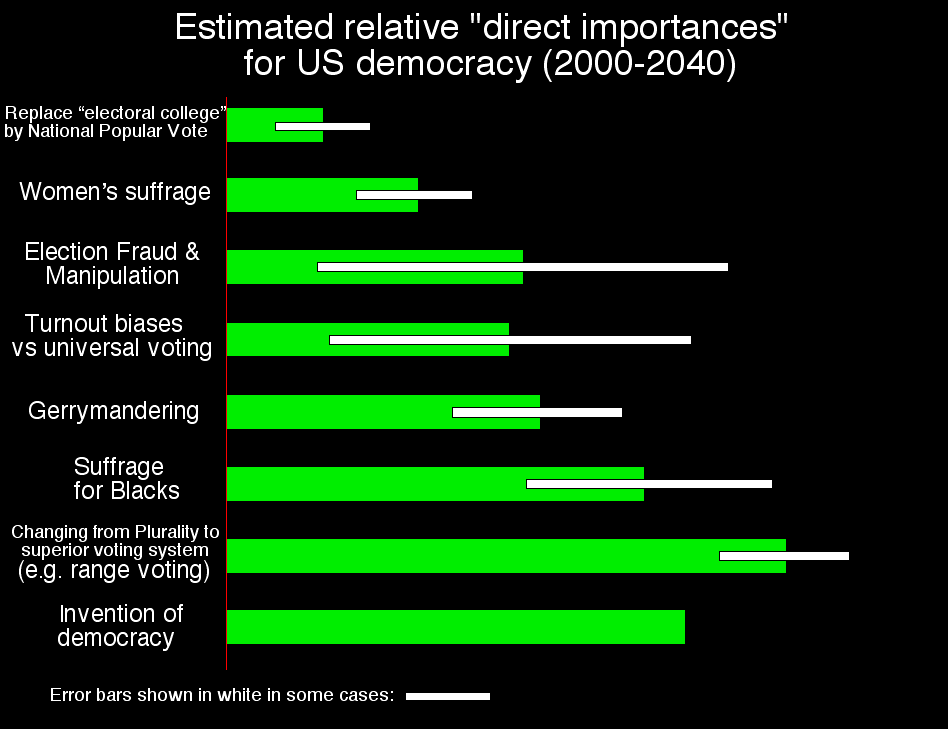

Abstract. We try to assess quantitatively how important various possible reforms would be (or have been) on US democracy. Intuitive guesses are not correct and hence most voting reform effort has been vastly mis-prioritized.
The following estimates are rather hard to measure, or even define, precisely. Nevertheless in order to prioritize voting reform efforts, we must make them. So here is our current attempt. Each importance is on an 0-100 scale where "inventing democracy" has importance 100. (Click hyperlinks to reach more detailed discussions of each.)
Note that a lot of the relative importances differ from what might naively/intuitively have been expected. That's why, unfortunately, a lot of voting reform effort has been / is prioritized wrong.
• National Popular Vote (replacing/eliminating the Electoral College): Only three presidential election results (1876, 1888, and 2000) have been changed due to this, with possible partial credit to 1824 also (since the notion of "popular vote" was not well-established at that time) out of 53 presidential elections total (or only 45 if we only count the ones after 1826). That's a 6.7 percent rate, which is approximately the same rate at which women's votes change contemporary US election winners, but exceeds the rate women have changed elections historically. This is also about half of the rate at which range voting would change election winners. So I'd give it somewhat more importance than women and about half of the importance of switching to range voting (e.g. 65±35) except that since this issue only affects presidents not Senate, Governors, or Congressmen, I downgrade by a factor of 3 to 22±11.
• Women's suffrage 55±18 (based on the percentage of contemporary election results changed by women's votes versus the number that would be changed by adopting other voting systems; but am downgrading 55 to 43 due to fact the USA's "gender gap" currently exceeds historical norms) One could speculate that the evidence indicates the gender gap is increasing with time (and therefore will continue to increase). I instead went with the intepretation that right now we have an atypically large gender gap and hence it will in future return to lower levels. This interpretation is (slightly) supported by the fact the gender gap decreased in 2004 versus in 2000 – and also, it cannot keep increasing forever: There is an upper limit when we reach the "male party" versus the "female party." If you do not want to worry about these two interpretations, view it this way: I am using as my estimate, a weighted average of the current gender gap, and the historical gender gap. If you want to view it the "increasing trend" way, then please increase the length of the "women" bar and also its error-bar.
• Election Fraud & Manipulation 55 (based on very noisy estimates of the fraction of elections changed; but am upgrading to 68 due to incoming new technological threat from computers, plus fact US seems at present to have less election fraud than historical norms) One can have a similar debate about whether this proves election fraud is decreasing or we now are in an atypically fraud-free period... (And again, manipulation in Ohio 2004 seemed greater than in FL 2000, thus providing slight evidence for fraud increasing back toward historical levels). Again view it this way: I am trying to use as my estimate, a weighted average of the current fraud level, and the historical level. If you want to view it the "decreasing trend" way, then please decrease the length of the "fraud" bar.
Brad Friedman points out (in essence) that election fraud can have bad consequences beyond merely changing the winner. It can, e.g. trigger a civil war. Meanwhile women not having suffrage never triggered a civil war (at least not directly and not yet). Therefore, election fraud should be upgraded in importance versus stuff like women's suffrage. I haven't done that because this page is systematically reckoning everything based only on election-changing "importance," but if you do do that – and please feel free – then I agree with Friedman the fraud bar should get a lot more importance than shown. How much more, and how to measure it, is unclear to me right now. (Also, if fraud were more severe and common, such as it currently is in some other countries, that too would raise its importance; but since this page says it is about "US" democracy, I have not done that.)
• Turnout biases – what if we had universal adult suffrage and made voting compulsory? 61±37 (based on the amount the vote would shift if we had universal voting in contemporary USA, as compared to known vote shifts due to women voting)
• Gerrymandering 61±14 (based on percent of contemporary election-winners changed; but am upgrading to 75 due to increasing technology & increased-gerry-frequency threat & the unprecedented threat to gerrymander the presidency)
• Suffrage for Blacks 93 (based on fact Blacks currently shift the US vote by about 1.7 times as much as Women despite their lesser population)
• Plurality vs Improved Voting Systems 123±15 (Bayesian Regret measurements indicate changing to Range Voting would have comparable importance to invention of democracy; also historical international presidential-level election survey indicates such a switch would alter about 1 election winner in 8 – a useful number to keep in mind when comparing with the effect of women's suffrage etc.)
• Invention of Democracy in the first place: 100. (All other numbers are rescaled appropriately to make this one be 100; view this as defining the "metric." For purposes of Bayesian Regret comparisons, am regarding "invention of democracy" as the replacement of "random winner" by "strategic plurality voting.")
Democratic vaguely means "all people getting what they want." I don't have a precise definition. I suppose the best available measure of "getting what they want" is "Bayesian Regret." I suppose that women-voting, blacks-voting, no-gerrymandering, better-voting-systems, no-fraud, and universal-voting, all are democracy-improving moves. But if, say, you oddly considered gerrymandering to be more democratic, then my estimate would still be as valid about its unsigned magnitude... and if you considered gerrymandering to be neither more nor less democratic then my estimate would be a valid upper bound.
Abd Lomax suggests that turnout bias is really a form of range voting (e.g. people who voluntarily wish to have less impact on the vote can with range voting use a subrange; and with non-compulsory voting could fail to vote). Having only highly motivated people vote in some sense "weights" votes according to motivation, garnering more information from voters, and hence some turnout biases might actually be viewed as more democratic. That argument seems to disappear if the voting-form is range voting, however.
One also might argue that perhaps having more-educated or older people vote more, might be better from a utilitarian standpoint, even if it is less "democratic." (Or you could counter-argue that the vote of a younger person is more important since they have more life yet to live and be affected by their vote...)
My working method is ad hoc and not terribly supportable. I'm acting like an Ancient Roman engineer making arithmetic estimates and using them to design a catapult – but working in ignorance of Newton's laws of physics. So basically, I assume without real justification that if X changes F times as many election-winners as Y, then X is F times more "important." (I try to do this for the contemporary US situation but with some extrapolation into the future.) Also if X leads to a vote-percentage additive-shift (also in contemporary US political climate) F times larger than Y, same conclusion. Finally if X leads in computer simulations to a Bayesian-regret additive change F times larger than Y, same conclusion. This methodology may actually be self-contradictory. But it is probably ok for "small perturbation" effects because "everything is linear locally" – the trouble is that some of our perturbations seem not small. (On the other hand – arguably they all are small.)
In view of all that and the rather large error bars on some of our estimates, they are not exactly to be regarded as the Pythagorean Theorem. (Also, some of the errors are highly-correlated so the "error bar" graphic is in that sense misleading, or at least not giving you the full picture.) Still, it is essential to make these estimates as best we can.
At first I thought this methodology lay far away from anything really justifiable in any rigorous mathematical sense.
But later I saw that there is a way to try for such a justification, and it might actually work.
It is a fact that smooth surfaces, analytic dynamical systems, etc, all are "locally linear" almost everywhere (or everywhere). In other words, for small-enough perturbations, it is irrelevant how you measure them – F-times-as-big perturbations according to metric #1, are automatically F times as big according to metric #2. (E.g, for readers who know differential geometry: it does not matter what coordinate system you use on a manifold. If you are at a nonsingular point measuring small perturbations, then every smooth coordinate system will agree that an F-times-larger change is an F-times-larger change.)
The key word is "small." Now one might imagine that a perturbation which has comparable effect to the entire invention of democracy, is not a "small perturbation"! But think again. Blacks are only 11% of the US voting population. That's pretty small. Yet they exert an effect comparable to the invention of democracy. In turn, arguably the entire invention of democracy is a small perturbation to the world-human-interactions dynamical system. Why? Well, consider, say, Pakistan versus the USA. About 300 years ago, they were economically comparable. But as of 2002, Pakistan had GDP per capita $1940 (PPP-dollar), versus the USA's $36400, which is 19 times smaller. Assume this difference was due to the USA being a democracy for most of that time, while Pakistan wasn't. (This oversimplifies greatly, but will suffice for our purposes.) In that case, the USA gained its large comparative wealth as a result of an annual exponential growth rate 1.01 times larger than Pakistan's. The point is that 1.01 is a small perturbation away from 1. History has shown that democracy is not beneficial if it only lasts a few years. Only over long time spans, where small advantages are allowed to compound exponentially, do we see the advantages of democracy for improving the human condition. So with that view, all of this stuff is a "small perturbation." To the extent that view is valid, our methodology (at least assuming we lie at a generic point...) is well justified.
Several political scientists in the 1970s devised mathematical definitions of "voting power." For example, consider a two-way vote among three voters A, B, C who have 5, 8, and 11 votes, respectively. Although one might naively imagine their voting powers differ, in fact all three have exactly equal voting power. (All three players are equivalent in terms of their effect on the election-outcome: if any two vote the same way, they win.) The usual definition is to consider every possible vote-configuration (there are 8 configurations with 3 players) and if your vote alters the winner in a fraction F of those configurations, you have "voting power F." This definition is flawed if some configurations are more likely than others. (For example, if we happened to know that A's and B's votes are not independent coin-tosses – instead A always votes the same way as B – then C would have zero voting power.) To overcome that objection we really should define a player's voting power to be the probability a player's vote will alter the election outcome, using whatever probability distribution happens in the real world.
Then our methodology can be regarded as an attempt to assess the "power" of different changes (such as "women's suffrage") to democracy: a change has F times more "importance" if it alters F times more election-winners.
Viewed in this sense, our "importance" is really just "voting power" – a notion well-accepted by political scientists – merely applied in a new domain.
If either Brams' or the "smallness" interpretation are accepted then it becomes possible to measure all these importances to a few percent accuracy if enough work (gathering data) is put into the effort. We've acted here as though both are correct. But it would also be possible to drop the smallness assumption. (I think that would result in the "invention of democracy" rising in importance but think nothing else would change much.) And then there is no longer any question about the legitimacy or lack-of-clear-meaning of these estimates.
• You might have thought women's suffrage had to be more important than blacks voting since there are far more women. Wrong: blacks vote very differently than whites, whereas women vote highly similarly to men, causing blacks to have a clearly larger vote-shifting effect.
• You might have thought blacks with only 11% of the voting population (about 13% of total population) could not possibly be nearly as important as the whole invention of democracy. Wrong: due to their very-one-way voting in contemporary USA, if we got rid of the blacks, the USA would actually have solid one-party rule and pretty much wouldn't be a democracy.
This in fact happened in the "Jim Crow" South during the 1900-1970 era, especially about 1915-1950; they had near-total Democratic party domination. If the "South" means the 11 former confederacy states AL, AR, FL, GA, LA, MS, NC, SC, TN, TX, VA, then during 1919-1948 there were 114 governor elections in these states and the Democrats won 113. The sole exception was 1920 TN, won by Alfred Taylor[R], by the smallest margin of any TN election during this period and during the Harding Republican-landslide.So within the constraints of our "direct effect" methodology, this non-intuitive conclusion seems justified. Incidentally, here a reader might object that, if the Blacks vanished, then we might initially get 1-party rule, but eventually the voters would tire of that and a competing party would arise and we'd settle back into 2-party rule. That might indeed be true. But that, if so, would be a secondary effect, i.e. not an effect caused by just one election, but rather caused by a sequence of many elections. We on this page are only talking about "direct" effects on democracy. This in fact is not (as I initially worried) a "failure" of my methodology; it is a very reassuring "success." As a further sanity-check – which I haven't done – one could directly examine what fraction of winners are altered by Black votes by using exit polls.
• Women's suffrage got far more reform effort, protest marches, etc, etc devoted to it than abolishing gerrymandering. But at least in the contemporary USA, gerrymandering is fairly-clearly more important. (It would be good to get more data to reduce the error bar for gerrymandering to make that even clearer.) And switching to range voting is even more important still, even though it unfortunately has gotten far less attention from reformers.
• It is again counterintuitive that the switch to range voting could be somewhat more important than inventing democracy. But if "inventing democracy" means switching from "random winner" (or something better than random-winner) to "strategic plurality-voting winner" then that is what a vast number of Bayesian Regret measurements say (and this is robust across a great many models...).